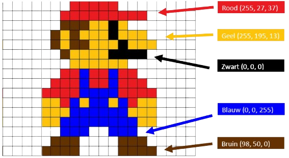
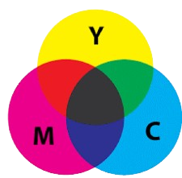
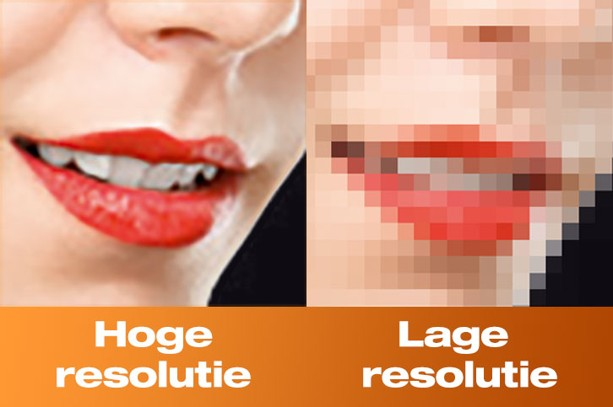

Het RGB-model is gebaseerd op de kleuren rood, groen en blauw. Deze kleuren vormen de basis voor alle andere kleuren. Het vormen van nieuwe kleuren gaat anders dan bij verf. Bij RGB krijg je met rood en groen blauw terwijl bij verf krijg je met deze combinatie geel. Je noteert de kleuren anders dan je gewend bent. Als je rood wil noteer je dat als 255, 0, 0. Bij groen is dat 0,255,0. 255 staat voor de hoeveelheid pixels.
Doordat het papier tijdens het printen wit is, werkt het RGB-model hier niet op, want dat werkt alleen op een zwarte achtergrond. Het CMY-model staat voor Cyan-Magenta-Yellow. Als je de kleuren mixt krijg je grijs en geen zwart. Hierdoor is het CMYK-model bedacht. De K staat hier voor key of voor black.
Pixels zijn duizenden kleine stipjes die samen een foto vormen. Het totaal aantal pixels in een beeld, wordt de resolutie genoemd. Als een beeld meer pixels bevat, is het beeld scherper. Hoe hoger de resolutie, hoe meer pixels de foto heeft per centimeter.
  Maker: Anouk Tol